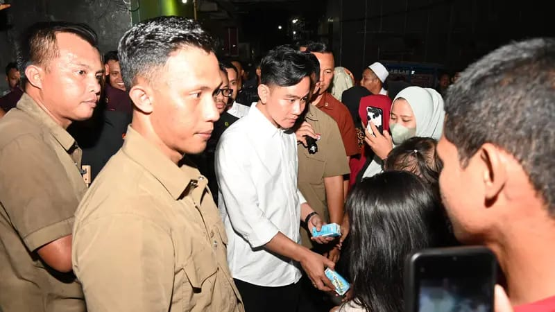
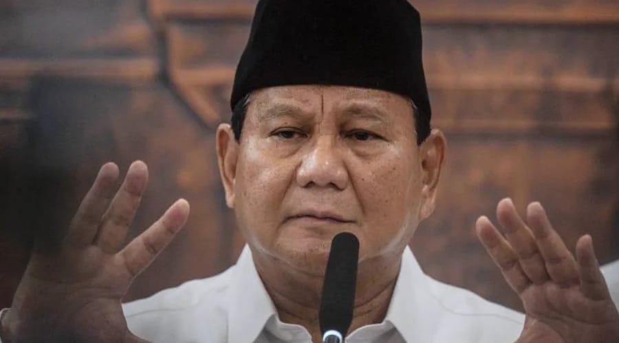
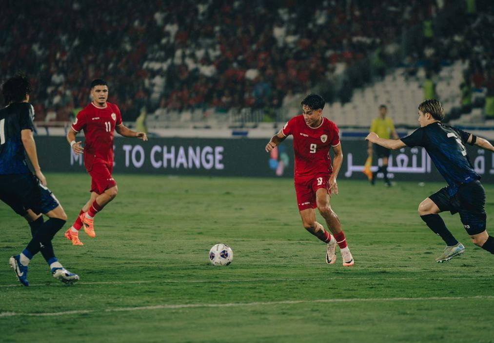
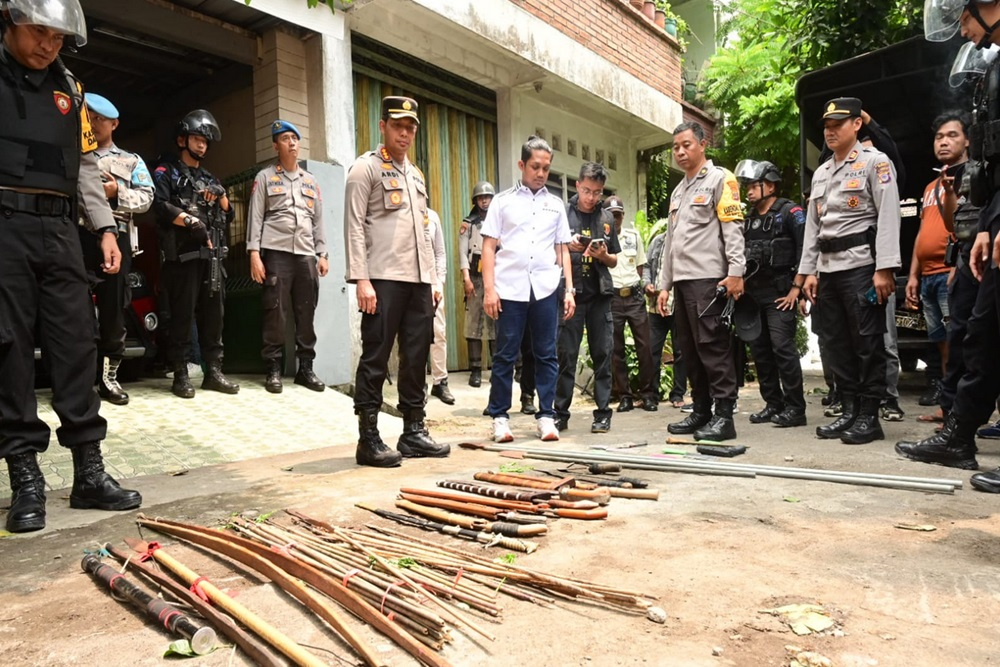
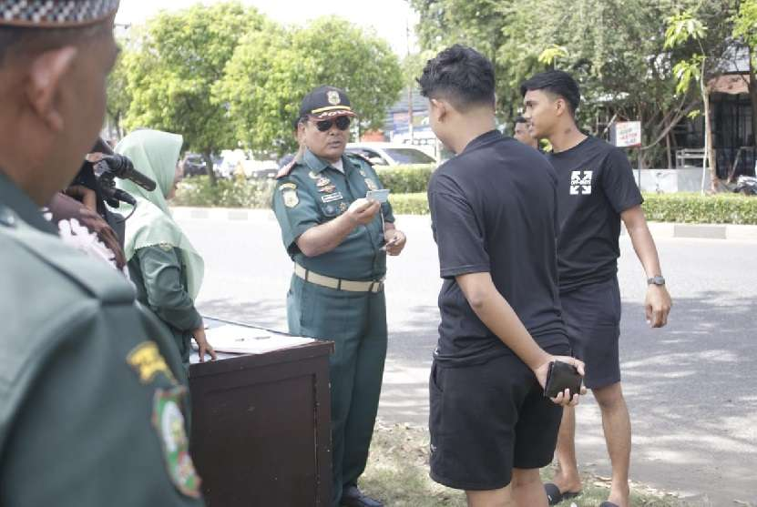

SELAMAT DATANG DI COQUETTE NEWS
Selamat datang di website kami, tempat Anda dapat menemukan berbagai informasi, layanan, dan inspirasi yang dirancang untuk memenuhi kebutuhan serta minat Anda. Kami dengan bangga menghadirkan platform yang tidak hanya informatif tetapi juga interaktif, memberikan pengalaman terbaik yang mengutamakan kenyamanan dan kemudahan bagi pengunjung.
Di sini, Anda dapat menjelajahi berbagai konten menarik, mulai dari artikel yang mengedukasi, berita terkini, hingga panduan yang bermanfaat untuk mendukung aktivitas Anda. Kami juga berkomitmen untuk terus berkembang dan menghadirkan inovasi guna memberikan nilai lebih kepada para pengguna.
Jadikan kunjungan Anda sebagai langkah untuk mengeksplorasi ide-ide baru, memperluas wawasan, dan mendapatkan solusi yang Anda cari. Jika ada pertanyaan atau masukan, jangan ragu untuk menghubungi kami melalui halaman kontak yang telah disediakan. Selamat menjelajahi, semoga pengalaman Anda di website kami penuh manfaat dan inspirasi!
Gibran Sapa Warga di Makassar, Bagi Buku Tulis hingga Susu ke Anak-Anak
Dalam kunjungannya ke Kota Makassar, Gibran Rakabuming Raka, yang dikenal sebagai tokoh muda dan Wali Kota Solo, menunjukkan kepeduliannya kepada masyarakat dengan menyapa warga serta berbagi kebahagiaan bersama anak-anak setempat. Kegiatan ini berlangsung di salah satu ruang terbuka hijau kota, disambut hangat oleh ratusan warga.
Gibran tidak hanya sekadar hadir untuk menyapa, tetapi juga membawa sejumlah hadiah berupa buku tulis, alat tulis, dan susu yang ia bagikan langsung kepada anak-anak. "Pendidikan dan kesehatan anak-anak adalah investasi masa depan. Saya ingin mereka tumbuh dengan semangat belajar dan hidup sehat," ujar Gibran dalam sambutannya yang diselingi senyuman khasnya.
Perubahan iklim ancam keberadaan pulau-pulau kecil di NTB
Lombok Barat - Pemerintah Provinsi Nusa Tenggara Barat mengatakan dampak fenomena perubahan iklim yang menaikkan muka air laut akibat pengaruh pemanasan global saat ini mengancam keberadaan pulau-pulau kecil di NTB.
"Pulau-pulau kecil di Nusa Tenggara Barat 5-10 tahun mendatang ter ancam hilang," kata Asisten ll Sekretaris Daerah NTB Fathul Gani dalam aksi penanaman dan bersih pantai di Lombok Barat, Sabtu.
Banyak pelajar Indonesia tak bisa berhitung, Prabowo akan kenalkan matematika sejak TK – ‘Saya tanya berapa 6+8, mereka jawab 12’
Menteri Pertahanan Prabowo Subianto mengungkapkan keprihatinannya terhadap rendahnya kemampuan matematika dasar di kalangan pelajar Indonesia. Dalam sebuah acara pendidikan yang digelar di Jakarta, Prabowo menceritakan pengalamannya bertemu sejumlah siswa yang kesulitan menjawab pertanyaan sederhana terkait penjumlahan.
"Saya tanya mereka, berapa 6 ditambah 8? Ada yang jawab 12. Ini menjadi tanda bahwa ada yang perlu dibenahi dalam sistem pendidikan kita," ujar Prabowo dengan nada prihatin di hadapan para guru dan pejabat pendidikan.
PPN naik jadi 12% mulai 2025, apa dampaknya pada daya beli masyarakat?
PPN naik jadi 12% mulai 2025, apa dampaknya pada daya beli masyarakat?
Saat mengumumkan kepastian kenaikan PPN dalam rapat kerja dengan Komisi XI DPR pada Rabu (13/11), Menteri Keuangan Sri Mulyani mengatakan keputusan ini sudah dipertimbangkan “demi APBN” dan “bukan membabi buta”.
Bagaimana Peluang Indonesia di Kualifikasi Piala Dunia 2026?
Timnas Indonesia kalah dari Jepang 0-4 di kandang sendiri, Stadion GBK pada matchday kelima Grup C ronde ketiga Kualifikasi Piala Dunia 2026 Zona Asia, Jumat (15/11) malam WIB. Samurai Biru unggul 2-0 di babak pertama, lalu gandakan di babak kedua.
Hasil itu membuat Timnas Indonesia sementara berada di posisi buncit Grup C dengan tiga poin dari lima laga, hasil dari tiga kali imbang dan dua kali kalah. Di atasnya adalah Bahrain dengan lima poin, lalu China, Arab Saudi, dan Australia masing-masing enam poin, sementara Jepang di posisi puncak dengan 13 poin.
Dipeluk Lisa Blackpink, Indra Herlambang Gemetar: Nggak Akan Mandi Seumur Hidup
Indra Herlambang didaulat menjadi presenter acara fan meetup Lisa di Beach City International Stadium, Jakarta pada Jumat (15/11/2024) malam. Ada banyak interaksi menarik dari mereka berdua di atas panggung.
Salah satunya adalah momen saat Lisa memeluk Indra Herlambang. Anggota Blackpink ini memeluk sang presenter dengan ramah dan hangat hingga membuat terharu.
Penganiayaan di Jambusari Sleman, 1 Orang Ditetapkan Tersangka
Lebih lanjut, Ardi menjelaskan duduk perkara pengeroyokan tersebut. Awalnya, korban bersama temannya mengendarai mobil dan terjadi senggolan dengan orang yang diduga sebagai pelaku.
Orang tersebut kemudian memukul mobil korban. Selanjutnya, oleh korban dikejar hingga sampai di lokasi pelaku tinggal di Jambusari.
Polisi WH Razia Pengguna Pakaian yang Tidak Sesuai Syariat di Banda Aceh
BANDA ACEH - Puluhan Pria dan Wanita berbusana ketat terjading razia oleh Satuan Polisi Pamong Praja dan Wilayatul Hisbah(Satpol PP-WH) Provinsi Aceh berlangsung Jalan Sultan Malikul Saleh, Kec, Lhong Raya, kawasan Stadion Harapan Lhong Raya, Banda Aceh pada Rabu, (13/11/2024) kemarin.
Razia Gabungan yang digagas oleh Satpol PP- WH Aceh turut dikawal oleh TNI/Polri, lebih tertuju kepada masyarakat yang menggunakan busana ketat.
Kapolri Ungkap Dugaan Penyebab Jumlah Anggota KKB Papua Makin Bertambah
Jakarta - Kapolri Jenderal Listyo Sigit Prabowo mengungkap jumlah anggota kriminal bersenjata (KKB) Papua semakin bertambah melebihi 1.400. Sigit menduga peningkatan anggota KKB tersebut turut dipicu penolakan terhadap pembangunan di Papua.
Dilansir dari detikNews, Sigit menjelaskan, jumlah anggota KKB awalnya 300 orang. Namun jaringan KKB ini bertambah setelah pengumuman daerah otonomi baru (DOB) dan juga perubahan terkait dengan kebijakan dana otonomi khusus (Otsus) Papua.